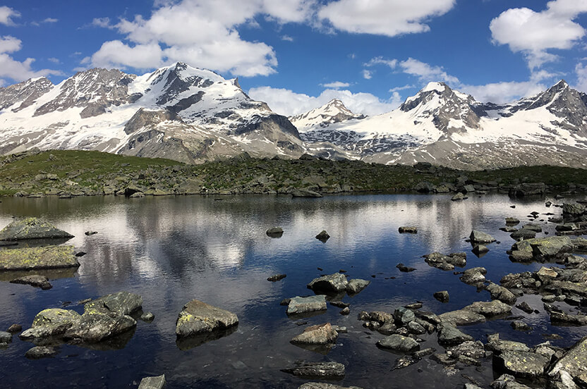
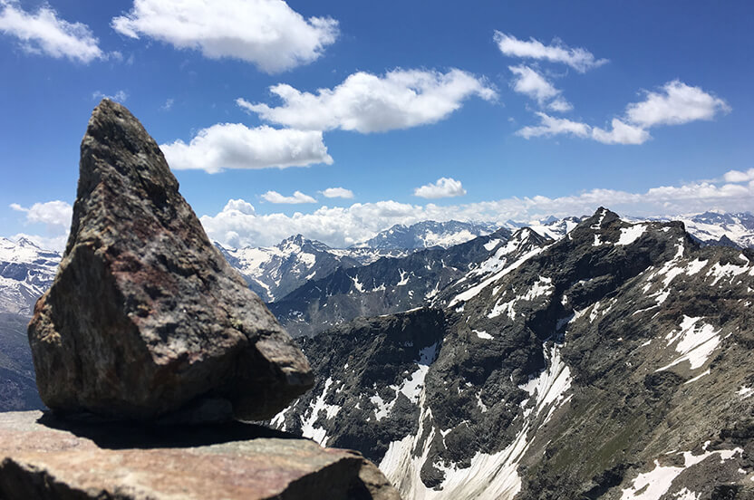
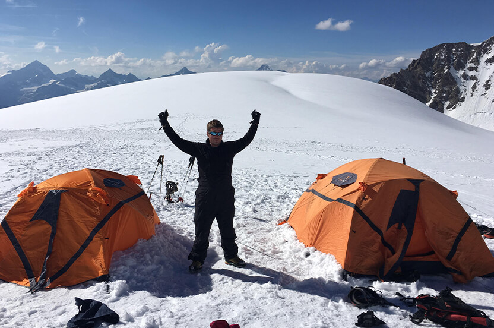

In juli 2018 heb ik voor de tweede keer een reis gemaakt naar Italië om, dit keer samen met mijn vader, wandeltochten te maken in de bergen. Dit zijn niet zomaar wandelingen, we komen op hoogtes waar maar weinig mensen komen. Dit jaar hebben ik en me vader twee weken voorbereiding gehad door zelf wandelingen te maken in de bergen. Deze wandelingen maakte wij in het natuurgebied Gran Paradiso die overigens ook een 4000+ meter hoge top heeft die nog steeds op mijn "lijstje" staat. Na twee weken mooie wandelingen gemaakt te hebben en top fit te zijn gaan we in onze laatste week ons voorbereiden om de Monta Rosa te beklimmen met een gids. In de fotogalerij zie je zowel foto's van onze eerste twee weken gevolgd door de finale, de Monta Rosa, waar we ook een nacht geslapen hebben op de gletsjer op 4250m hoogte.
Het meertje tussen de valleien

Het meertje op de hoogvlaktes.
In het plaatsje Pont komen twee valleien samen, hier begonnen wij onze wandeling. In het begin moesten we al snel door een verlaten tunnel heen lopen waarna de klim begon naar de hoogvlaktes. Na een uurtje of twee zwetend omhoog te klimmen kwam we uit op een hoogvlakte. Op de hoogvlakte liep een rivier en op de achtergrond hoorde je het gegil van de marmotten. Vanuit de hoogvlakte kwam je in een bocht waar je een prachtig uitzicht had op twee valleien. Verder op kwamen we bij een meertje waar ik het niet kon laten om het bovenstaande prachtige plaatje te schieten.
De top van de Bioula

Het uitzicht vanaf de top
Om 5 uur s'ochtends vertrokken wij voor de Punta Bioula. Deze tocht heeft meer dan 2000 hoogtemeters en is tussen de 20 en 30 kilometer lang. In het donker met een lampje op je voorhoofd vertrokken wij de bossen in. Binnen 2 uur waren we de boomgrens gepasseerd en begon het licht te worden. Het pad naar de top was slecht vindbaar en stond nauwelijks meer aangegeven. We moesten zoeken naar steenmannetjes om onze weg te navigeren. Deze top is de afgelopen jaren maar door een enkeling beklommen. Onderweg zijn we een aantal moeilijke sneeuwvelden tegen gekomen waar we onze voetstappen in moesten hakken omdat we onze sneeuwijzers niet mee hadden. Uiteindelijk aangekomen op de top had ik dit fantastische uitzicht. Al duurde de tocht meer dan 12 uur en liep ik bijna op me tandvlees was het me wel echt waard!
Slapen op de Monta Rosa

Basecamp opgezet op de gletsjers van de Monta Rosa
Via de skie liften werden naar het begin van onze toch gebracht. Vanaf de liften is het ongeveer nog een uur lopen naar de berghut waar ik in 2016 wel overnacht heb. Dit jaar echter, slapen we niet in een berghut maar hebben we zelf kampeer spullen mee om te overnachten op de gletsjers van de Monta Rosa. Na uren lopen in touwgroepen door de al zacht geworden sneeuw bereiken we eindelijk de plek op 4250 meter hoogte waar we ons tentenkamp op gaan zetten. Door de hoogte is dit wel een uitdaging, want elke keer als je bukt en weer overeind komt ben je duizelig.